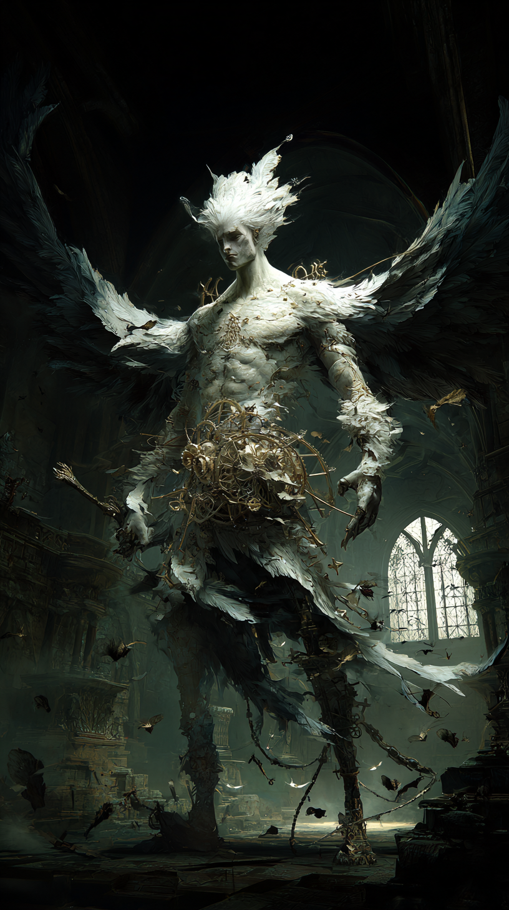

Primary Attestation
1 Enoch 8:3Named among the Watchers who taught specific domains of forbidden knowledge: "And Ezeqeel taught the knowledge of the clouds."
Name MeaningEzekeel / Ezeqeel shares the root with the prophet Ezekiel — Yĕḥezqēl — meaning "God Strengthens." The one who was strengthened by God turned his strength toward teaching what God had not sanctioned.
Manuscript TraditionPresent in the Ethiopian Ge'ez manuscripts of 1 Enoch and confirmed in the Aramaic fragments from Qumran. Name spellings vary: Ezeqeel, Ezekeel, Ezequeel across manuscript families.
Lore Record
Ezeqeel is named in 1 Enoch 8:3 as the Watcher who taught 'the knowledge of the clouds.' In the ancient world, clouds were not weather — they were the language of the divine: the pillar of cloud in Exodus, the cloud cover on Sinai, the cloud-chariot of God in Ezekiel. The one who could read clouds was reading the edge of the divine will. Ezeqeel taught humanity to access that reading without permission.